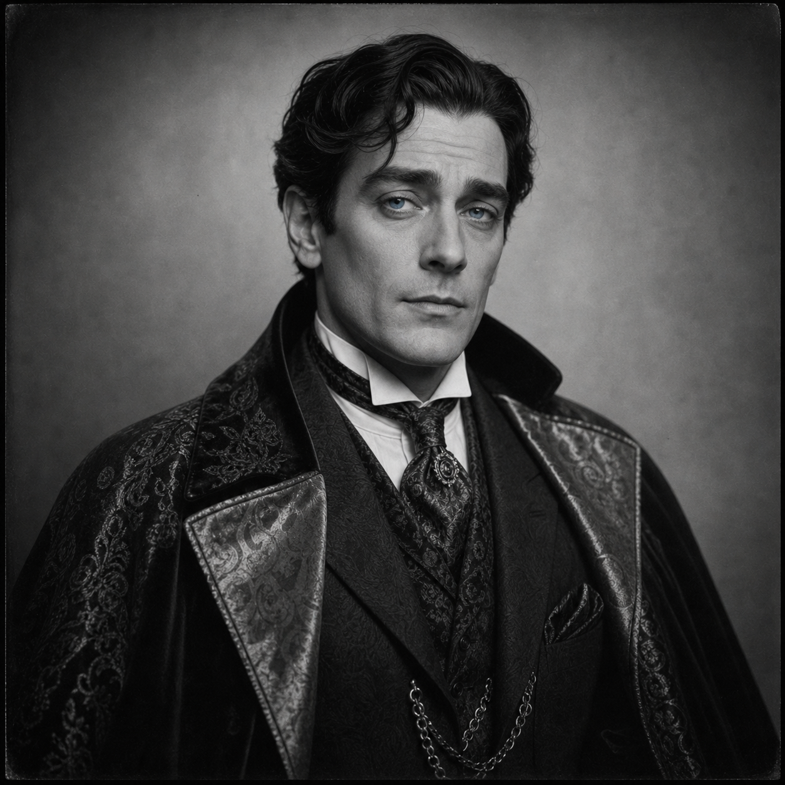

Preston Henderson
(380 Points)
Male; Age 37; 6'1", 190 lbs; A tall, roughly handsome man with jet black hair and piercing blue eyes.
| ST: 14/15 [45] | IQ: 16 [80] | Speed: 6.50 |
| DX: 14 [45] | HT: 12/14 [20] | Move: 5 |
| Dodge: 7/8 | Parry: 11/13 |
Advantages
Charisma +3 [15] (Reaction: +3); Combat Reflexes [15] (Fright Check: 18); Extra Fatigue +3 [9]; Handsome [15] (Reaction: +2/+4); Lang: English (Native) [0]; Lang: French (Native Spoken/Native Written) [6]; Lang: Helltongue (Accented Spoken/Broken Written) [3]; Luck [30]; Magery 2 [25]; Patron (Followers of the Right Hand) (15 or less) [60] (Equipment: Standard, +5; Special Qualities (Access to Magic in Non-magical World): Very Unusual, +10; Secret: -5; Subtraction (Minimal Intervention): -5); Patron (Merovech - a Demon of the Band of Balseraph) (6 or less) [15] (Equipment (Magical): Expensive, +10; Special Qualities (Balseraph Servitor of Kobal Price of Dark Humor): Very Unusual, +10; Unwilling: -5; Merovech is Unwilling due to the binding caused by the release in France. However, it is not a complete binding and thus Merovech can harm Preston, if he is not careful); Unusual Background (Demon Patron) [15].
Magic Light Cloak (Upper-class - Light Grey)
Base Cost: 96; Breakable: DR<=15/HP<=75, -15%; Can Be Hit: -8 Penalty, -5%; Can Be Stolen By: ST Contest, -20%; Cannot Be Repaired: -15%; Unique: -25%; Final Cost: 19.
Insubstantiality [96] (Carry Objects: Light Encumbrance, +20%).
Magical Italian-tailored Silk Suit (Light Grey)
Base Cost: 80; Breakable: DR>15/HP>75, -5%; Can Be Hit: -2 Penalty, -20%; Can Be Stolen By: Stealth or Trickery, -10%; Cannot Be Repaired: -15%; Unique: -25%; Final Cost: 20.
DR 10 (Everything) [30]; Passive Defense 2 [50].
Disadvantages
Addiction [-5] (Legal: +5; Incapacitating or Hallucinogenic: -5); Cowardice [-10] (Roll: Will, Death: Will-5); Curious [-5] (Roll: IQ); Duty (Merovech) (15 or less) [-25] (Involuntary: -5; Subtraction (Extremely Hazardous): -5); Enemy (Angels and Servitors of Heaven) [-23] (Roll: 6 or less, ×1/2; Unknown: -5); Enemy (Unknown Enemies of FRH) [-60] (Unknown: -5; Subtraction (Access to Magic in Non-magical World): -15); Nightmares [-5]; Secret (Servitor of Hell) [-20]; Secret Identity (Preston Henderson - really, Francois Jacob) [-10]; Social Stigma 1 (Jewish) [-5].
Quirks
Always carries a keepsake from his first supernatural encounter.; Can't resist a good dare; Enjoys jazz music; Has to wear hair long per his Demon Patron; Suspicious of cats. [-5]Skills
Acting-15 [1]; Administration-14 [½]; Animal Handling-13 [½]; Area Knowledge (Northern Europe)-15 [½]; Area Knowledge (USA)-15 [½]; Blackjack-14 [1]; Brawling-16 [4] (Parry: 11); Carousing-11 [1]; Detect Lies-15 [2]; Diplomacy-14 [1]; Disguise-14 [½]; Driving/TL6 (Automobile)-12 [½]; Driving/TL6 (Heavy Wheeled)-12 [½]; Fast-Draw (Knife)-15* [1]; Fast-Draw (Pistol)-15* [1]; Fast-Talk-15 [1]; First Aid/TL6-15 [½]; Forgery/TL6-13 [½]; Gambling-14 [½]; Guns/TL6 (Pistol)-17 [2]; Guns/TL6 (Rifle)-16 [1]; Guns/TL6 (Shotgun)-16 [1]; Hidden Lore (The War Between Heaven & Hell)-14 [½]; History-14 [1]; Holdout-14 [½]; Interrogation-14 [½]; Intimidation-15 [1]; Knife-14 [1] (Parry: 7); Knife Throwing-14 [1]; Leadership-17* [½]; Lockpicking/TL6-15 [1]; Merchant-14 [½]; Motorcycle/TL6-13 [½]; Occultism-16 [2]; Orienteering-14 [½]; Panhandling-18* [½]; Performance/Ritual-15 [1]; Pickpocket-11 [½]; Riding (Horse)-12 [½]; Rituals and Ceremonies/TL0-15 [2]; Savoir-Faire (Military)-15 [½]; Savoir-Faire (Servan of Hellt)-15 [½]; Scrounging-15 [½]; Sex Appeal-12 [2]; Shadowing-14 [½]; Sleight of Hand-12 [1]; Soldier/TL6-14 [½]; Spell Throwing (Ball)-15 [2]; Spell Throwing (Curse-Missile)-14 [1]; Spell Throwing (Lightning)-14 [1]; Stealth-14 [2]; Strategy-13 [½]; Streetwise-15 [1]; Survival (Woodlands)-14 [½]; Swimming-13 [½]; Symbol Drawing-15 [2]; Tactics-13 [½]; Teamster-14 [½]; Thaumatology-17* [4]; Tracking-14 [½]; Traps/TL6-14 [½]; Whip-13 [1] (Parry: 7).
*Cost modifiers: Combat Reflexes, Charisma, Magery.
Spells
Affect Spirits-16; Apportation-16; Ball of Lightning-16; Block-16; Blur-16; Body of Air-16; Body of Wind-16; Cold-16; Command Spirit (Type)-16; Complex Illusion-16; Continual Light-16; Continual Mage Light-16; Control Illusion-16; Create Air-16; Create Fire-16; Darkness-16; Death Vision-16; Deflect Missile-16; Detect Magic-16; Fear-16; Fireball-16; Foolishness-16; Heat-16; Ignite Fire-16; Invisibility-16; Lend Health-16; Lend Strength-16; Light-16; Lightning-16; Mage Light-16; Mage Sight-16; Materialize-16; Minor Healing-16; Perfect Illusion-16; Purify Air-16; See Invisible-16; Seek Air-16; Sense Emotion-16; Sense Foes-16; Sense Spirit-16; Shape Air-16; Shape Fire-16; Simple Illusion-16; Solidify-16; Soul Jar-15; Sound-16; Steal Health-16; Steal Strength-16; Summon Demon-16; Summon Minor Demons-17 [2]; Summon Spirit-16; Truthsayer-16; Turn Spirit-16; Windstorm-16; Zombie-16.
Equipment
Boots, Leather (PD 2, DR 2; 4 lbs.; $10); Cigarette Lighter ($1); Compass ($3; +1 to Orienteering); First Aid Kit, Individual (2 lbs.; $6; +1 to First Aid); Flashlight (1 lb.; $2); Handcuffs (1 lb.; $50); Hat, Slouch ($1; TL: 6); Lockpicks (good; $200; Skill: 16); Playing Cards ($½); Powerstone (Strength 5; $1,240); Remington M11 12g (cr 4d, Skill: 16; 10 lbs.; $50; Malfunction: crit.; SS: 12; Acc: 5; Half DMG: 25; MAX: 150; RoF: 3~; Shots: 5+1; ST: 12; Rcl: -2; TL: 6); Sap (Blackjack) (cr 1d, Skill: 14, Parry: 1; 1 lb.; $½; Reach: C; ST: 7); Smith & Wesson Military & Police .38 Special (cr 2d-1, Skill: 17; 2 lbs.; $30; Malfunction: crit.; SS: 10; Acc: 2; Half DMG: 120; MAX: 1500; RoF: 3~; Shots: 6; ST: 8; Rcl: -1; TL: 6); Springfield M1903 .30-06 (cr 7d+1, Skill: 16; 9 lbs.; $120; Malfunction: crit.; SS: 14; Acc: 11; Half DMG: 1000; MAX: 4200; RoF: 1/2; Shots: 5+1; ST: 12; Rcl: -3; TL: 6).Description
Born 1886 in Château-Thierry, France as Francois Jacob to a secular Jewish family. Due to the antisemitism, his family immigrated to the US when Francois was 5 in 1891. In order to start a new life, his father bribed a US official and the whole family became American Protestant family, the Hendersons. They settled in Boston where now Preston excelled in school and became fully fluent in English and French. In October of 1900, his father died of tuberculosis. His mother died shortly thereafter and at 14, Preston found himself on the street. He was lucky enough to become a minor pickpocket that made extra money doing the dirty work for the Anti-Saloon League learning the street and hitting the books. When he turned 17 in 1903, he took his money and his language skills to France. For about a decade, Preston lived a playboy's life traveling between the US and France seducing rich ladies and generally having a good time.War with Germany ended that, Preston had always avoid physical danger if possible. He was fully capable of committing violence but feared for his physical health. He fled back to the US in 1914. However, even with his luck (or, because of it?) he got sucked into a UMT in 1914 and got a full soldier's training including using horses and large trucks for quartermaster. In 1917, he was deployed and at at battle near his birth place of Château-Thierry, he fled a battle into a church and "luckily" cracked open a sealed vessel that released the Balseraph Merovech. He had been trapped for 400 years and was not happy. His Demonic Superior Kobal Impudite Prince of Dark Humor had thought it was funny to see his servant get trapped in a church.
Due to the nature of the seal and how Preston's luck worked, Merovech became bound to Preston as Preston became bound to Merovech. German troops entered the church and Merovech dealt with them harshly and scared the Heaven out of Preston.
Ignorant of the current ways of humans, Merovech directed his new thrall to smuggle him out of this war zone and somewhere he could use his Lies to win the War Against Heaven.
Preston used his various people skills and experience as a traveler to get him and Merovech back to Boston. There Preston helped get Merovech setup as a mob boss in the emerging bootlegging business opened up by Prohibition.
Preston now lives a basic life trying to keep out of the attention of the law and keeping Merovech from having him do too many dangerous things. Merovech has a bunch of other servants now, so Preston is more a freelance manager. He has used his proximity to a real Demon to learn Helltongue, realize his Magery, and learn a number of spells.
Merovech has shown him Hell and he still gets Nightmares. Merovech says Preston will be honored in Hell. Preston knows Balseraphs are Liars as Seraphs cannot lie, Balseraphs, the fallen Seraphim, cannot tell the Truth, only Their Truth. Preston knows, for certain, he is looking at Eternal Torment and he wants a way out.
When he gets a message from Edgar who promises a way to get out from under Merovech, Preston was most interested. He knows if Merovech learns he is working with another occult group, he will be worse off than dead. His cowardice and curiosity keep tearing him apart.